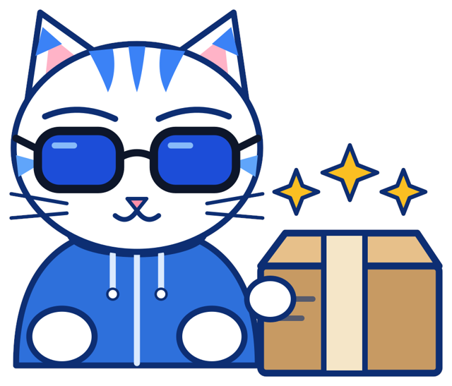
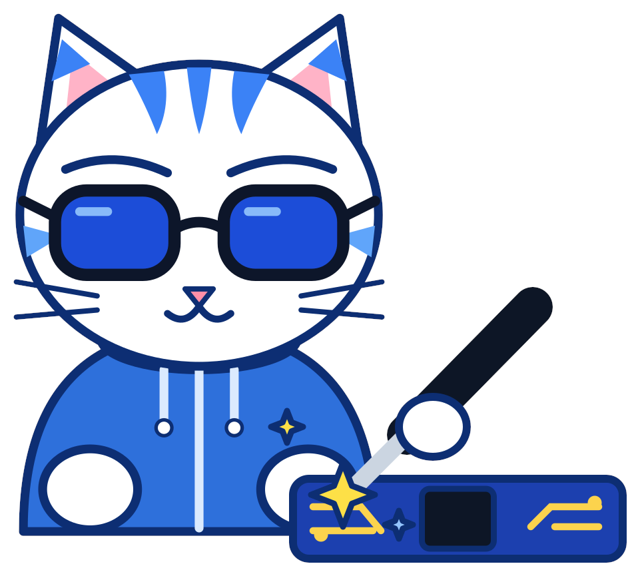
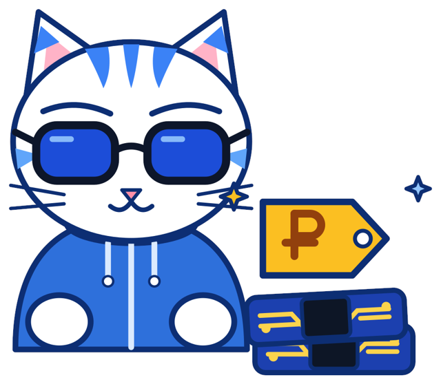
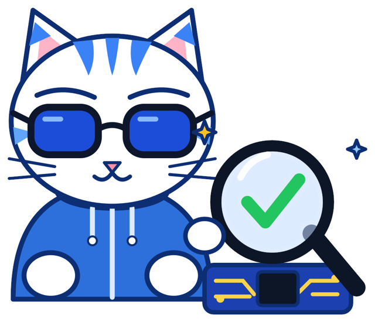
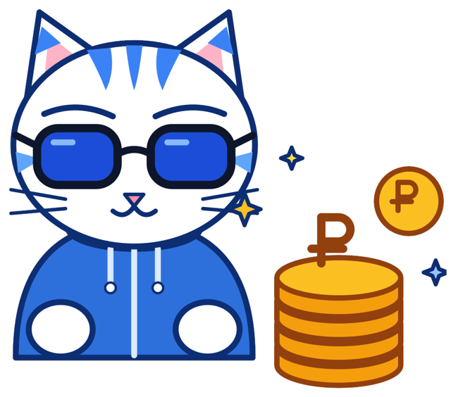
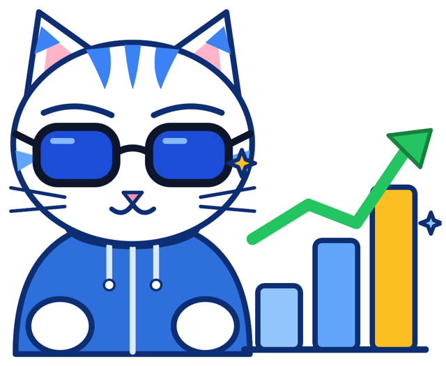

Печатные платы
Разработка и трассировка плат под задачу заказчика.
Учебно-производственное конструкторское бюро на базе КСИПТ. Студенты работают над реальными заказами по электронике под руководством наставников. Колледж получает современную базу практики, а малый бизнес получает прототипы и небольшие партии устройств.
Старт проекта: 12 месяцев и 5 020 000 ₽ стартового бюджета.
Мы предлагаем создать на базе КСИПТ учебно-производственное конструкторское бюро. Это площадка, где студенты работают над реальными заказами по электронике под руководством наставников. Для колледжа это современная база практической подготовки, для малого бизнеса возможность заказать прототип или небольшую партию устройств.
первый цикл запуска и развития
стартовый бюджет по бизнес-плану
помещение в колледже
восемь мест монтажа и два места проектирования
Студентам нужен опыт, который можно показать работодателю, а получить его только на учебных заданиях сложно. Небольшим компаниям и частным разработчикам нужна помощь с прототипами и малыми партиями, но крупным заводам такие заказы невыгодны. Бюро соединяет эти две задачи на одной площадке колледжа.

Заказчикицелевые малые партии, не подтверждённая мощность
Два связанных направления: конструкторская работа и производство. Начинаем с тех работ, которые соответствуют оборудованию и подготовке команды.
Разработка и трассировка плат под задачу заказчика.

НАПРАВЛЕНИЕ 2Прошивки для микроконтроллеров и тестовые утилиты.

НАПРАВЛЕНИЕ 3Пайка компонентов, сборка устройств и кабельные жгуты.

НАПРАВЛЕНИЕ 4Опытные образцы и учебное оборудование для колледжа.
Бизнес-план предусматривает помещение 80 м² в колледже, восемь мест монтажа и два места проектирования. Для работы понадобятся паяльные станции, микроскопы, измерительная техника, рабочие станции с САПР и оборудование для проверки готовых изделий. Студенты работают под руководством руководителя и мастера производственного обучения.
Каждое изделие перед передачей клиенту проходит визуальную и электрическую проверку.
Это план оснащения, а не сведения об уже имеющихся площадях и оборудовании. Условия допуска к работам, в том числе для несовершеннолетних студентов, утверждает колледж с учётом возраста и требований безопасности.
Договоры с предприятиями и субподряд на малые партии.
Учебные стенды, платы для дипломных и курсовых проектов.
Инженеры из инкубаторов, технопарков и профильных сообществ.
Сайт с калькулятором стоимости и карточки услуг на B2B-площадках.
Малые партии и прототипы, ориентир по срокам 2–4 дня при наличии деталей.
Обращаемся к малому бизнесу, стартапам и разработчикам.
Понятное ТЗ, расчёт цены и согласованные сроки.
Фото изделий и результаты проверки качества.
Обратная связь клиента и рекомендации.
Сайт и ВКонтакте покажут услуги, процесс работы и готовые изделия.
Помещение, вентиляция и закупка оборудования.
Наладка, обучение и пробные изделия.
Договоры с клиентами и приёмка результатов.
Рост объёмов и повторные заказы.
Сроки зависят от утверждения финансирования.
стартовый бюджет по бизнес-плану

5 020 000 ₽ — это сумма на запуск. Для текущей работы первых двух лет бизнес-план отдельно предусматривает дополнительное финансирование колледжа.
плановая выручка за 2027–2028 годы
Выручку направим на материалы, оплату работы студентов и наставников и развитие площадки. Услуги: платы, прошивки, монтаж и прототипы. Клиенты: разработчики, стартапы и небольшие предприятия.

Это прогноз, а не полученная выручка. Она пока не покрывает все текущие расходы, поэтому первые два года проект требует софинансирования колледжа. Срок окупаемости зависит от количества заказов и клиентов.
Следующий шаг: подтвердить финансирование, закрепить наставников и договориться о пилотных заказах.